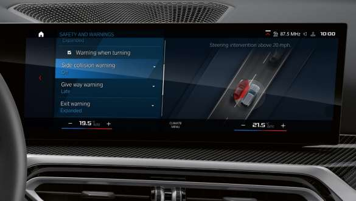
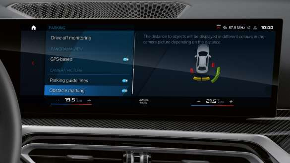

Koncept rada, usluge i sistemi za asistenciju vozacu u novom BMW M2 Coupe
Driving Assistant
Sigurosni paket Driving Assistant ukljucuje prednje upozorenje na
sudar s funkcijom kocenja, pomoc pri ogranicenju brzine, ukljucujuci i
ekran ogranicenjo brine s indikatorom za preticanje i predupozorenjem,
kao i zodnje upozorenje na nadolazeci saobracaj pri voznji u rikverc.
Upozorenje o napustanju trake.+
Parking Assistant Plus
Bolji pregled prilikom parkiranja i manevrisanja: Parking Assistant Plus
dopunjuje standardnu kontrolu udaljenosti pri parkiranju dodatnim
kamerama. Zahvaljujudi panoramskom i 3D prikazu okoline vozila,
mozete bez napora manevrisati cak i uskim prostorima. Ovo sprecava
ostecenja pri parkiranju i nezgode u nejasnim situaciama.